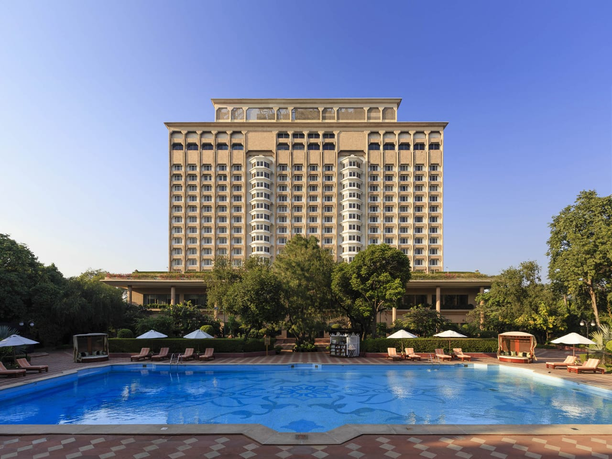
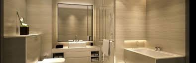

�
ONLINE HOTEL ROOM RESERVATION
TAJ PARADISE
(5 star hotel)
"The great advantage of a hotel is that it is
a break from home life"

At TAJ PARADISE HOTEL, we offer all the essential facilities needed to make your stay both convenient and comfortable. We provide a large variety of services such as a fitness center to keep you toned and healthy, a swimming pool for you to cool off after a day of venturing Bangkok city, secretarial assistance from our staff upon request, a tourist information desk for recommendations of sights to see, room service for your luxury and comfort, a doctor on call in the event you feel unwell, in-room high-speed wireless connection to keep you plugged in, cable TV for late night entertainment, a babysitting service, laundry and dry cleaning services, concierge service to accommodate your stay, and a limousine and airport transfer service.
BEDROOM

Taj paradise Hotel features 95 comfortable and well-equipped guest rooms, including three residential suites specifically designed for guests planner longer stays in city. Our residential suites feature kitchen and laundry facilities, as well as WiFi and cable television.
WASHROOM

HOTEL RULES SUMMARY
- The check in time is from 2:00pm, the check out tim
e is until 12:00am.
- The hotel shall hand over to the guest a room upon
his/her arrival.
- At the check out, the guest shall leave the room in
its normal state, pay for the services
and hand over the key card to the reception desk.
- Buffet (self-service) breakfast is available at the
restaurant hall on the fourth floor
between 7:00am and 10:00pm.
- Room service and housekeeping cleaning services is
available until 14:00pm. This
includes changing all of the bedding, making the be
d, vacuuming the carpet and
washing the hard floors. The cleaning process also
includes a strict cleaning of the
bathroom to ensure that it remains sanitary.
- The guest shall receive visitors in common use area
s of the hotel.
- It is not allowed to bring into the room and common
use areas any inflammable and
explosive substances as well as substances with a s
trong odor.
- The guest shall use the room and common use areas s
o as not to disturb other guests.
- Guests shall observe night-time peace between 23.00
and 06.00 in the morning the
following day.
- Guests have a safety deposit box available in theirrooms for storage of their valuables
- Guests should make sure any time they leave the roo
ms that the door to the hotel room
is properly locked.
- If any guest should miss any of their belongings th
ey should immediately notify the
reception desk staff. The head or an authorized per
son shall draft a report, check the
computer records on room entries and notify the pol
ice, if the guest so requests.